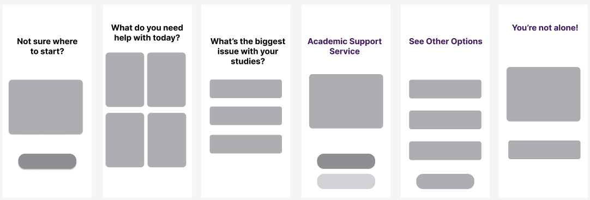
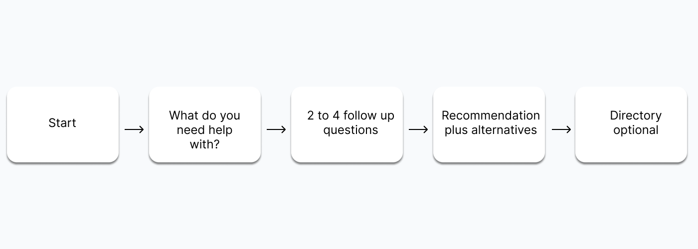
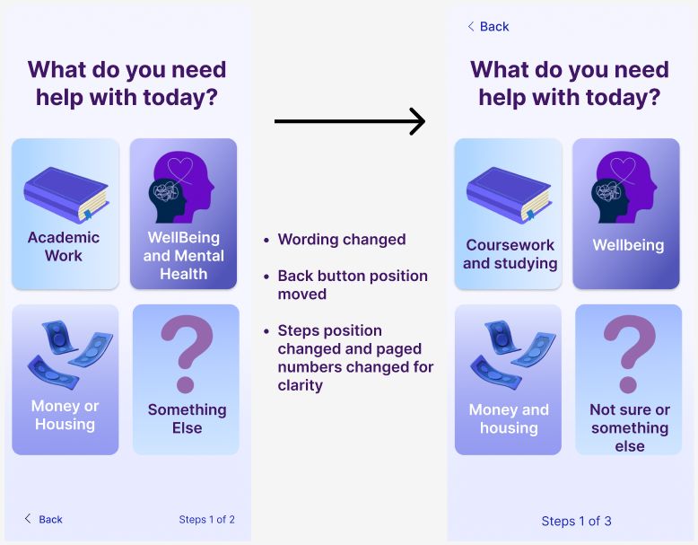
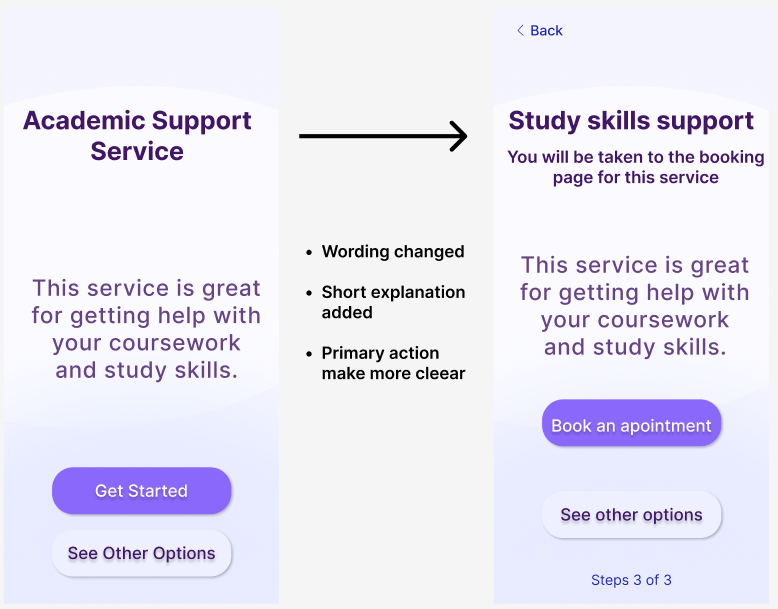
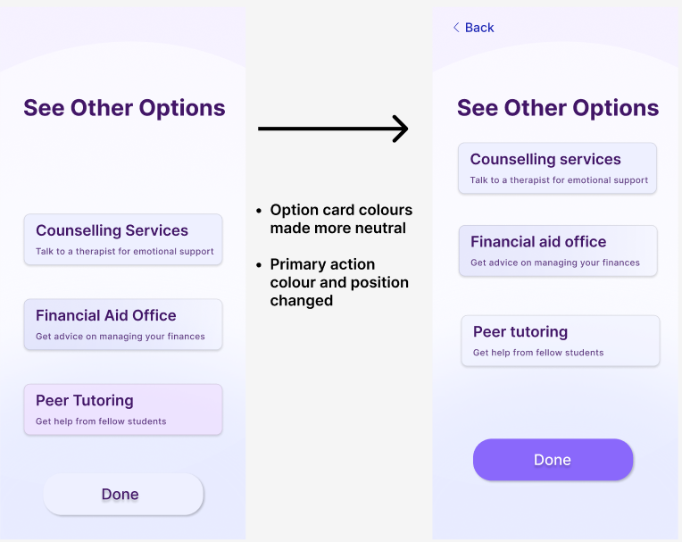

Service Design
Student
Support Finder
Overview
Students often look for support when they are already stressed. Many existing pages list services without helping students decide where to start, which can lead to delays or giving up. This concept tests a short guided journey that ends with a clear recommended next step and optional alternatives.
Research and insights
"I'm unsure which service applies to my situation."
"Fear of choosing the wrong option caused delays."
"Plain language and reassurance increased confidence."
Low fi and flow
Low fi wireframes

User flow diagram

Usability testing & Changes
Based on usability testing, I made targeted visual and content changes to improve clarity and reduce hesitation.
Help page improvements

Support page improvements

Options page improvements

Heuristic review
-
01
System & Real World
Matching language to how students actually speak.
-
02
Visibility of Status
Clear progress cues through the journey.
-
03
User Control
Clear back and exit points throughout.